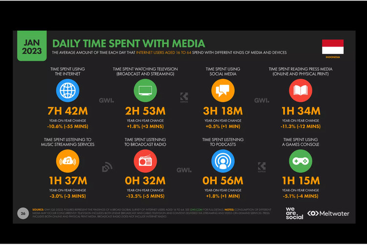
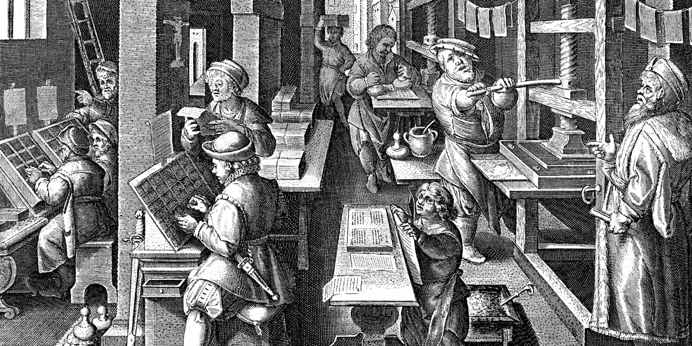
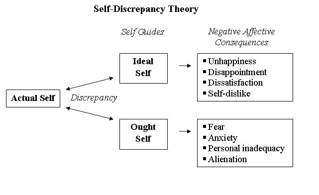
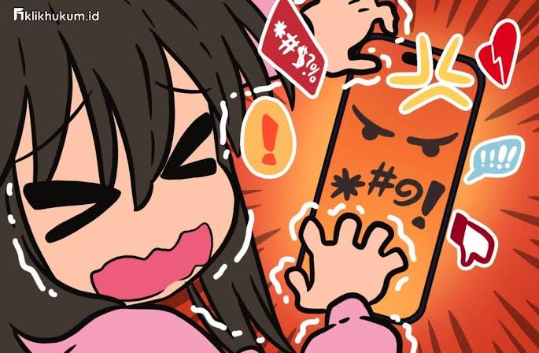
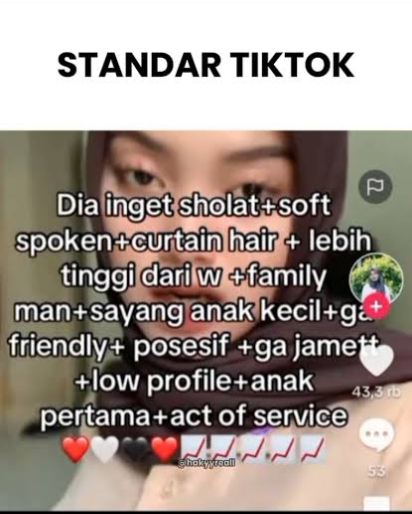

Dulu, hidup terasa sederhana. Pilihan terbesar kita cuma berkisar di hal-hal kecil: mau duduk di bangku mana di kelas, jajan apa di kantin, main ke rumah siapa setelah pulang sekolah. Keputusan-keputusan itu ringan, hampir nggak pernah membuat kita ragu lama. Tapi sekarang, dengan umur yang belum genap dewasa, hidup seperti membuka puluhan pintu dalam satu waktu. Semuanya menuntut jawaban cepat, masa depan, pendidikan, hubungan, pertemanan, bahkan soal jati diri.
Kepala jadi penuh, bukan oleh satu masalah besar, tapi oleh seribu kemungkinan yang saling berebut ruang. Dan ironisnya, semakin banyak pilihan yang kita punya, semakin sulit rasanya untuk melangkah. Kita menimbang, menunda, mengulang-ulang skenario di kepala… sampai akhirnya kita terjebak bukan karena hilang arah, tapi karena terlalu takut memilih satu langkah kedepan.

Dalam psikologi, fenomena seperti ini dikenal sebagai Analysis Paralysis . Keadaan ketika seseorang terlalu banyak menganalisis atau memikirkan suatu hal hingga akhirnya tidak mampu mengambil keputusan apa pun (Colman, Oxford Dictionary of Psychology, 2015). Psychology Today menyebutnya sebagai “situasi ketika ketakutan membuat keputusan yang salah justru membuat seseorang tidak membuat keputusan sama sekali.” Artinya, bukan karena kita tidak tahu apa yang harus dilakukan, melainkan karena otak kita terlalu sibuk menimbang semua kemungkinan yang ada.
Kondisi ini diperparah dengan adanya media sosial, dimana informasi yang berserakan di media terus kita konsumsi setiap saat, dalam laporan penelitian terbaru menyatakan bahwa rata-rata warga Indonesia menghabiskan waktu kurang lebih 7 jam dan 42 menit setiap hari untuk berselancar di internet dan menghabiskan waktu sekitar 3 jam dan 18 menit setiap hari untuk menggunakan media sosial (statista.co). Yang memungkinkan kita menerima banyak informasi, opini-opini publik mulai dari pakar, abang-abangan medioker, hingga orang yang baru putus cinta, dan muncul yang namanya standar TikTok. Artikel ini akan membahas penyebab Analysis Paraliysis dan bagaimana media sosial hingga era informasi ini memperburuk masalah psikologis ini.
Apa penyebab utama Analysis Paraliysis?
Dalam proses berfikir atau menganalisis sebuah keputusan yang ingin kita ambil, pada dasarnya kita mengapami beberapa penghambat psikologis dan sosiologis yang menyebankan kita terperangkap dalam fikiran kita sendiri sehingga kita tertunda untuk mengambil sebuah tindakan dalam suatu permasalahan, atau kita sebut gejala Anaisis Paraliysis, gejalanyan atau penyebabnya yaitu:
Ketiga penyebab utama analysis paralysis yaitu banyaknya pilihan, perfeksionisme, dan fear of failure, tidak berdiri sebagai faktor yang terpisah, melainkan saling bersangkutan dalam menciptakan kebuntuan kognitif. Banyaknya pilihan bisa menimbulkan tekanan untuk menemukan opsi terbaik, yang kemudian memicu perfeksionisme dan tuntutan untuk membuat keputusan yang sempurna. Ketika standar kesempurnaan itu tak terpenuhi, muncullah rasa takut gagal yang justru memperkuat dorongan untuk menunda atau menghindar. Siklus ini menciptakan lingkaran psikologis yang sulit diputus: semakin lama seseorang menganalisis, semakin besar kecemasan dan keraguan yang ia rasakan. Dengan begitu, analysis paralysis bukan sekadar kegagalan dalam mengambil keputusan, melainkan refleksi pribadi dari konflik antara kebutuhan akan kontrol dan ketakutan kehilangan kendali atas hasil keputusan itu sendiri.
Era Informasi sebagai Katalis Analysis Paralysis
Pada saat kita mencari opsi terbaik dalam mengambil sebuah keputusan yang mengundang yang namanya perfecksionisme dalam Analysis Paraliysis, kita akan dituntut untuk memenuhi starndar kesempurnaan, tuntutan ini di sebabkan riuhnya Era Informasi.
1. Informasi berlebih memperluas “paradox of choice” secara ekstrem
Di dunia digital kita sekarang informasi berpindah dalam hitungan detik, kita bisa mendapatkan informasi melalui media sosial, email, Twitter, halaman web, dll. semuanya menyebarkan potongan-potongan realitas ke dalam hidup kita setiap hari. Era ini adalah masa di mana informasi lebih mudah ditemukan daripada pesawahan asri. Sejak Gutenberg menciptakan mesin cetak, informasi tak lagi menjadi barang mewah kaum elit. Ia menjadi milik publik, dan membuka jalan bagi revolusi kognitif manusia.
Namun, seperti semua kemajuan besar, berkah itu datang dengan paradoksnya sendiri. Kini kita hidup dalam lautan informasi, begitu luas hingga kadang membuat kita tenggelam. Fenomena ini kita kenal sebagai information overload. Setiap hari kita diserbu opini publik: dari pakar, influencer, abang-abangan medioker sampai ibu-ibu yang baru selesai masak langsung buka TikTok. Semua berbicara, dan semuanya serentak.
Ketika informasi dan opini publik yang terus berdatangan di kehidupan kita setiap harinya, ada salah satu riset psikologi kognitif (eppler & mangis, 2004) yang membahas tentang Information Overload yang menujukkan bahwa kelebihan informasi dapat menurunkan kualitas keputusan seseorang, karena pada dasarnya otak manusia memiliki kapasitas terbatas dalam memproses informasi sehingga ia tidak lagi mampu membedakan mana yang penting dan mana yang hanya bising.
Yang artinya, internet saat ini memperluas "paradox of choice" dari dunia nyata ke dunia ide dan nilai, yang sederhananya setiap pilihan hidup kita sangat bisa dibandingkan, dan menimbulkan tekanan eksistensial. Yang biasanya kita mau bersenang-senang ke suatu tempat dengan tenang tapi malah ragu, soalnya takut dibilang alay, jamet, dan segala hal yang bikin kita terus pikir panjang dan menjadi jalan buntu, sehingga ketika kesenangan sederhana pun terasa salah karena terlalu banyak kemungkinan yang dianggap “lebih baik”.
2. Media sosial memperkuat perfeksionisme digital
Akhir-akhir ini banyak konten satir dan sarkasme yang membahas standarisasi sosial atau sama halnya standar tiktod yang akhir-akhir ini sedang marak dibahas dan mulai diberi perhatian, platform-platform media sosial seperti TikTok dan Instagram terus menciptakan standar kesempurnaan sosial yang tanpa kita sadari terus kita internalisasi. Di dunia maya, seolah ada aturan tak tertulis: kalau mau dibilang keren, harus begini; kalau mau dianggap estetik, harus begitu.
Platform seperti Tiktok dan Kawan-kawan kini bukan cuma tempat berbagi momen, tapi juga etalase kehidupan ideal. Semua tampak indah, mewah, bahagia, produktif, singkatnya, sempurna. Padahal di balik layar, banyak yang sedang berjuang keras agar terlihat “baik-baik saja.” Kita pun mulai ikut menyesuaikan diri, bukan karena ingin, tapi karena takut ketinggalan versi ideal yang sedang tren di Fyp.
Tanpa sadar, kita mulai membandingkan hidup kita yang berantakan dengan hidup orang lain yang sudah disunting rapi. Inilah yang dalam psikologi disebut Self-Discrepancy Theory (Higgins, 1987): ada jarak antara diri kita yang sebenarnya (actual self), diri yang kita ingin jadi (ideal self), dan diri yang katanya seharusnya (ought self). Nah, media sosial itu jago sekali memperlebar jarak itu. Setiap kali scroll, kita diingatkan betapa “kurang”-nya diri sendiri, kurang cantik, kurang sukses, kurang kaya, kurang estetik.
Dan ketika semua hal diukur pakai standar medsos, perfeksionisme jadi penyakit baru. Kita takut salah upload, takut caption-nya cringe, takut di judge. Bahkan hal sederhana seperti mau pakai baju warna ungu aja bisa bikin overthinking: “ini ungu-nya dibilang janda nggak sih?” Akhirnya, kita nggak jadi ngapa-ngapain, cuma menatap layar, bimbingan, lalu menunda.
Ironisnya, media sosial yang katanya bikin kita bebas berekspresi, justru bikin kita sibuk menyensor diri sendiri. Kita takut kelihatan jelek di mata orang yang bahkan nggak kenal. Hidup berubah jadi kompetisi tak terlihat untuk jadi versi terbaik menurut algoritma, bukan menurut diri sendiri.
Di era media sosial ini bisa kita pahami bahwa analysis paralysis semakin diperparah dengan ketakutan akan ketidakmampuan seseorang memenuhi kesempurnaan yang seakan menjadi setandar baru dalam kehidupan, sehingga alasan untuk takut semakin banyak dan akhirnya kita terus menganalisis keputusan yang akan kita ambil agar sesuai standar dan di terima di media massa.
3. Ketakutan gagal kini bersifat publik, bukan hanya pribadi
Dulu, fear of failure berarti takut mengecewakan diri sendiri. Sekarang, artinya berubah: takut jadi bahan penilaian digital. Satu langkah salah, satu kalimat keliru, satu foto yang kurang simetris bisa jadi bahan konsumsi publik dalam hitungan detik. Dunia massa tidak pernah lupa, dan yang lebih menakutkan: dunia maya juga tidak pernah benar-benar memaafkan.
Jika dulu kegagalan terasa seperti percakapan batin yang sepi, kini ia seperti konser terbuka di mana semua orang bisa ikut bersorak. Bahkan sebelum kita gagal, pikiran kita sudah sibuk memutar kemungkinan terburuk: “bagaimana kalau dilihat orang?”, “bagaimana kalau dikomentari?”, “bagaimana kalau dijadikan bahan gibah online?”. Akibatnya, banyak orang lebih memilih diam, menunda, atau tidak bertindak sama sekali, hanya agar tidak salah langkah di mata publik digital.
Menurut survei yang dilakukan oleh Pew Research Center (2022), lebih dari 60% pengguna muda (usia 18–25 tahun) mengaku pernah menahan diri untuk mengunggah sesuatu karena takut mendapat reaksi negatif atau komentar buruk. Angka ini menunjukkan bahwa self-censorship di media sosial kini sudah menjadi bentuk pertahanan diri baru, bukan karena kita tidak punya pendapat, tapi karena kita takut dihukum oleh opini massa.
Inilah bentuk baru dari analysis paralysis: bukan lagi karena terlalu banyak pilihan, tapi karena terlalu banyak mata yang mengawasi. Dan yang paling ironis, Kita hidup di dunia yang katanya menghargai keaslian, tapi justru memaksa kita berhati-hati mati-matian agar terlihat “tulus.” Kita ingin jujur, tapi takut diserang. Kita ingin jadi diri sendiri, tapi sadar diri sendiri tidak selalu “menarik” untuk ditonton.
Tak heran jika banyak dari kita akhirnya memilih bermain aman, menjadi versi netral dari diri sendiri yang tidak menyinggung siapa pun, tidak terlalu berani, tidak terlalu jujur. Dengan kata lain, kita belajar untuk tidak hidup terlalu keras agar tidak terlalu kelihatan.
Di titik ini, analysis paralysis muncul sebagai bentuk “perlindungan” diri. Kita menunda tindakan bukan karena malas, tapi karena takut salah langkah di mata publik. Kita menimbang, menyaring, mengedit, bahkan untuk hal-hal yang dulu spontan. Kita bukan lagi manusia yang belajar dari kesalahan, tapi aktor yang harus selalu tampil sempurna di layar sosial.
Dan mungkin di sinilah letak ironi zaman ini: media sosial yang katanya memberi ruang ekspresi, justru menekan kebebasan paling dasar, hak untuk salah. Standar kesempurnaan digital telah menjadi agama baru, dan rasa takut kita untuk melanggar dogmanya adalah bentuk ibadah paling setia.
Jalan Keluar dari Analysis Paralysis
Setelah memahami akar masalah analysis paralysis, kita bisa melihat pola yang jelas: kebuntuan ini bukan sekadar akibat banyaknya pilihan, melainkan hasil dari proses berpikir yang kehilangan ujung. Dipicu oleh informasi berlebih, dorongan perfeksionis, dan ketakutan akan kegagalan. Di tengah era informasi yang terus memperkuat rasa “tidak pernah cukup”, pikiran kita berubah menjadi medan perang antara keinginan untuk membuat keputusan terbaik dan ketakutan akan salah langkah. Karena itu, solusi bukan lagi soal mencari cara berpikir lebih cepat, tetapi belajar mengembalikan keseimbangan antara berpikir dan bertindak, antara analisis dan keberanian mengambil risiko.
Berikut ini beberapa pendekatan yang dapat membantu kita keluar dari lingkaran analysis paralysis dan menemukan kembali arah di tengah bisingnya dunia modern.
1. Mengembalikan kendali ke dalam diri
Langkah pertama untuk keluar dari analysis paralysis adalah menyadari bahwa kebingungan bukan tanda kelemahan, melainkan efek dari kelebihan beban mental. Dalam psikologi kognitif, otak manusia memiliki batas kapasitas dalam memproses informasi (cognitive load). Maka, ketika dunia luar terus menekan dengan ribuan opsi dan opini, satu-satunya jalan adalah menyaring.
- Batasi jumlah pilihan. Terapkan prinsip bounded rationality dari Herbert Simon: keputusan tidak harus sempurna, cukup “baik untuk saat ini.” Misalnya, ketika bingung memilih pakaian, batasi opsi maksimal tiga potong, lalu pilih dalam 30 detik. Ini melatih otak untuk bertindak cepat tanpa merasa bersalah.
- Latih toleransi terhadap ketidaksempurnaan. Coba biasakan menyelesaikan tugas dengan target “80% cukup.” Perfeksionisme sering menyamar sebagai ambisi, padahal sering kali hanyalah bentuk ketakutan. Dengan memberi izin pada diri sendiri untuk “cukup baik,” kita sedang belajar berani gagal tanpa menilai diri sendiri.
- Ambil keputusan kecil secara cepat. Misalnya, pilih foto yang mau diupload tanpa harus diedit dengan efek berlebih, atau kirim pesan tanpa mengedit terlalu lama. Hal-hal sederhana ini mengembalikan refleks spontan yang sering hilang karena terlalu banyak berpikir.
2. Menciptakan budaya yang lebih manusiawi
Analysis paralysis tak bisa disembuhkan sendirian jika budaya sosial masih menghukum kesalahan. sehingga Kita perlu solusi kolektif untuk budaya digital yang memaafkan, bukan yang mengintai.
- Bangun ruang sosial yang aman dari penilaian. Di sekolah atau lingkungan kerja, biasakan memberi pengakuan untuk keberanian mencoba, bukan hanya keberhasilan. Misalnya, guru atau teman seharusnya bisa memberi umpan balik “keren udah berani presentasi,” bukan hanya “presentasimu bagus.”
- Kritis terhadap “standar media sosial”. Sadari bahwa algoritma dirancang untuk menonjolkan yang ekstrem, bukan yang realistis. Mengurangi perbandingan sosial (social comparison) seperti tidak meng "iya" kan suatu opini hanya karena "relate" adalah bentuk perlawanan terhadap sistem yang membuat kita merasa kurang.
- Normalisasi kegagalan. Kegagalan bukan reputasi buruk, tapi bagian dari kemajuan. Seperti kata Samuel Beckett:
“Ever tried. Ever failed. No matter. Try again. Fail again. Fail better.”
3. Menggunakan media secara sadar
Teknologi bukan musuh ia hanya memantulkan cara kita menggunakannya. Maka, solusinya bukan “meninggalkan media sosial”, tetapi menggunakannya secara mindful.
- Atur diet informasi. Gunakan prinsip digital minimalism (Cal Newport): pilih platform yang benar-benar bernilai bagi hidupmu. Misalnya, meninggal kan platform yang tidak mendidik dan tidak berkualitas, bukan di platform yang isinya opini (yang bahkan dianggap suatu fakta) abang abangan medioker sama emba emba kaum "minimal cowo itu bla bla..." dengan gerakan tangan khasnya.
- Gunakan algoritma secara sadar. Sering-sering tekan tombol “Not Interested” pada konten yang memicu perbandingan atau kecemasan. Biarkan sistem bekerja untukmu, bukan melawanmu.
- Berani offline. Kadang keputusan terbaik muncul saat kita berhenti mencari informasi baru, dan mulai mendengarkan diri sendiri.
5. Menerima ketidaktahuan sebagai bagian dari hidup
Kebuntuan berpikir muncul dari ilusi bahwa kita harus tahu segalanya sebelum bertindak. Padahal, seperti kata Søren Kierkegaard:
“Life can only be understood backwards; but it must be lived forwards.”
Kita tidak perlu menunggu kepastian untuk melangkah, justru dengan melangkah, kepastian perlahan terbentuk. Ketika kita sadar bahwa tak ada keputusan yang sempurna, kita mulai bebas dari jerat overthinking. Dalam ketidaksempurnaan, ada keutuhan yang lebih jujur: keberanian untuk tetap hidup meski serba tidak pasti.
Kesimpulan
Pada akhirnya, dunia tidak kekurangan informasi, yang hilang justru ketenangan untuk memahami. Kita hidup di masa di mana setiap keputusan bisa dibuka, dikomentari, dan diadili. Tapi ironisnya, semakin kita takut salah, semakin sering kita tidak hidup sama sekali.
Jika kita ingin dunia yang lebih jujur, bukan hanya nilai moral yang perlu diperkuat, tapi juga desain insentif yang sehat. Sistem yang adil akan menuntun manusia pada perilaku baik bukan paksaan, tapi logika yang membuat kejujuran menjadi pilihan paling rasional.
Barangkali solusi terbesar bukanlah mencari lebih banyak jawaban, melainkan berdamai dengan ketidaktahuan. Bahwa kita boleh salah langkah. Bahwa kita tidak harus terlihat sempurna. Bahwa keputusan yang sederhana pun tetap sah jika diambil dengan kejujuran.
Seperti kata Kierkegaard tadi
“Hidup hanya bisa dipahami ke belakang, tetapi harus dijalani ke depan.”
Kita tidak akan pernah tahu apakah langkah kita benar sampai kita melangkah.
Jadi mungkin, tugas kita hari ini bukan mencari keputusan terbaik, tetapi belajar mempercayai diri sendiri lagi di tengah dunia yang terlalu banyak suara. Karena keberanian terbesar di era ini bukanlah tampil sempurna, melainkan berani hidup apa adanya, dengan segala ragu, salah, dan ketidaksempurnaan yang manusiawi.